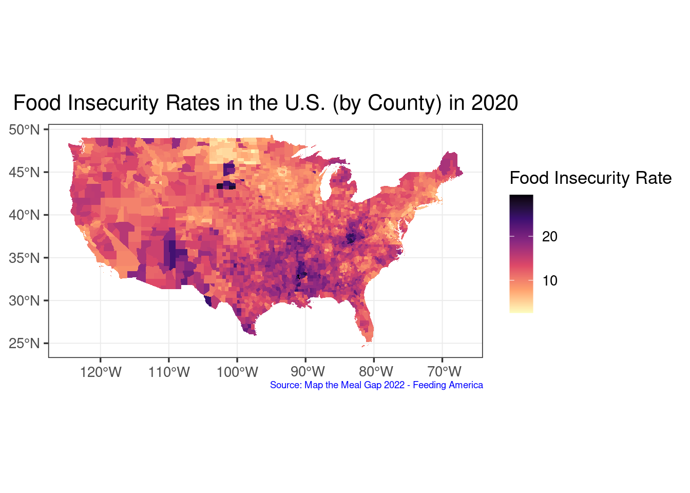
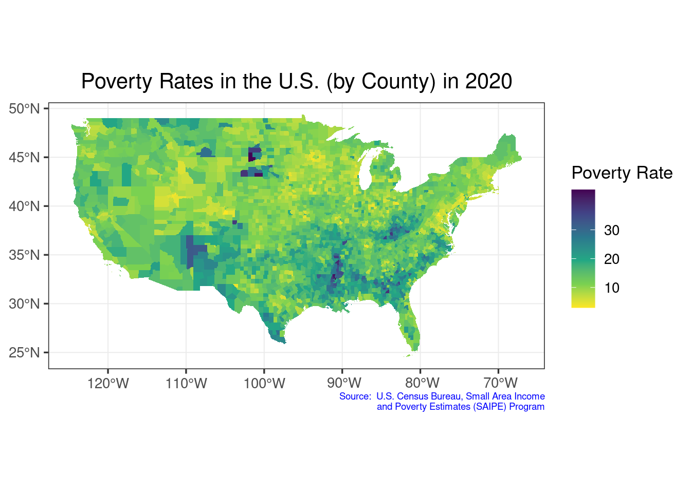
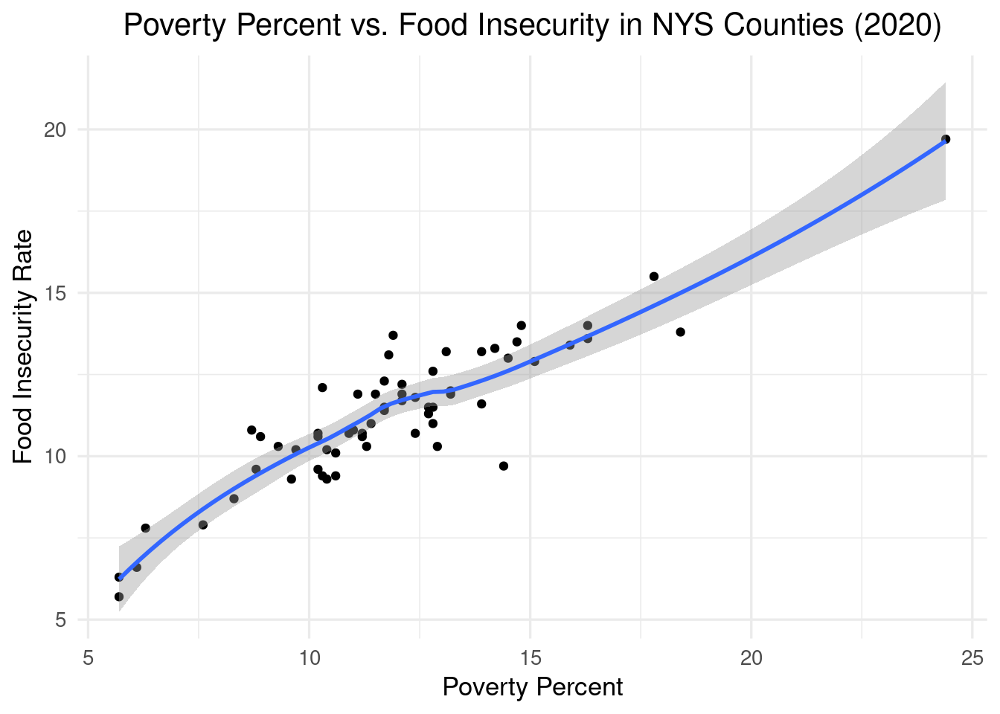

library(tigris)## To enable caching of data, set `options(tigris_use_cache = TRUE)`
## in your R script or .Rprofile.library(ggplot2)
library(plotly)##
## Attaching package: 'plotly'## The following object is masked from 'package:ggplot2':
##
## last_plot## The following object is masked from 'package:stats':
##
## filter## The following object is masked from 'package:graphics':
##
## layoutlibrary(maps)
library(dplyr)##
## Attaching package: 'dplyr'## The following objects are masked from 'package:stats':
##
## filter, lag## The following objects are masked from 'package:base':
##
## intersect, setdiff, setequal, unionlibrary(viridis)## Loading required package: viridisLite##
## Attaching package: 'viridis'## The following object is masked from 'package:maps':
##
## unemplibrary(tidycensus)
library(sf)## Linking to GEOS 3.10.2, GDAL 3.4.1, PROJ 8.2.1; sf_use_s2() is TRUE#food insecurity data
FS20_url<- read.csv("https://raw.githubusercontent.com/geo511-2022/final_project-LeahBargnesi/master/data/Map_the_Meal_Gap_Data%20(1)/MMG2022_2020-2019Data_ToShare.csv")
FS19_url<- read.csv("https://raw.githubusercontent.com/geo511-2022/final_project-LeahBargnesi/master/data/Map_the_Meal_Gap_Data%20(1)/MMG2021_2019Data_ToShare.csv")
FS18_url<- read.csv("https://raw.githubusercontent.com/geo511-2022/final_project-LeahBargnesi/master/data/Map_the_Meal_Gap_Data%20(1)/MMG2020_2018Data_ToShare.csv")
FS17_url<- read.csv("https://raw.githubusercontent.com/geo511-2022/final_project-LeahBargnesi/master/data/Map_the_Meal_Gap_Data%20(1)/MMG2019_2017Data_ToShare.csv")
FS16_url<- read.csv("https://raw.githubusercontent.com/geo511-2022/final_project-LeahBargnesi/master/data/Map_the_Meal_Gap_Data%20(1)/MMG2018_2016Data_ToShare.csv")
FS15_url<- read.csv("https://raw.githubusercontent.com/geo511-2022/final_project-LeahBargnesi/master/data/Map_the_Meal_Gap_Data%20(1)/MMG2017_2015Data_ToShare.csv")
FS14_url<- read.csv("https://raw.githubusercontent.com/geo511-2022/final_project-LeahBargnesi/master/data/Map_the_Meal_Gap_Data%20(1)/MMG2016_2014Data_ToShare.csv")
FS13_url<- read.csv("https://raw.githubusercontent.com/geo511-2022/final_project-LeahBargnesi/master/data/Map_the_Meal_Gap_Data%20(1)/MMG2015_2013Data_ToShare.csv")
FS12_url<- read.csv("https://raw.githubusercontent.com/geo511-2022/final_project-LeahBargnesi/master/data/Map_the_Meal_Gap_Data%20(1)/MMG2014_2012Data_ToShare.csv")
FS11_url<- read.csv("https://raw.githubusercontent.com/geo511-2022/final_project-LeahBargnesi/master/data/Map_the_Meal_Gap_Data%20(1)/MMG2013_2011Data_ToShare.csv")
FS10_url<- read.csv("https://raw.githubusercontent.com/geo511-2022/final_project-LeahBargnesi/master/data/Map_the_Meal_Gap_Data%20(1)/MMG2012_2010Data_ToShare.csv")
FS09_url<- read.csv("https://raw.githubusercontent.com/geo511-2022/final_project-LeahBargnesi/master/data/Map_the_Meal_Gap_Data%20(1)/MMG2011_2009Data_ToShare.csv")To understand the degree of necessity for the implementation of urban agriculture and community fridges, we want to look at an overall map of the most recent food insecurity rates within the United States. With the information provided by this data, we want to compare it to poverty rates in the U.S. to determine whether they are significantly correlated.
FS20_url<- read.csv("https://raw.githubusercontent.com/geo511-2022/final_project-LeahBargnesi/master/data/Map_the_Meal_Gap_Data%20(1)/MMG2022_2020-2019Data_ToShare.csv")
FS2020_data<- FS20_url %>%
rename(Food_Insecurity = X..of.Food.Insecure.Persons.Overall..1.Year., Food_Insecurity_Rate = Overall.Food.Insecurity.Rate..1.Year., County = County..State)
FS2020 <- subset(FS2020_data, select = c(State, County, Food_Insecurity_Rate, Food_Insecurity))USA <- counties(cb = TRUE)## Retrieving data for the year 2021##
|
| | 0%
|
| | 1%
|
|= | 1%
|
|= | 2%
|
|== | 2%
|
|== | 3%
|
|== | 4%
|
|=== | 4%
|
|=== | 5%
|
|==== | 5%
|
|==== | 6%
|
|===== | 7%
|
|===== | 8%
|
|====== | 8%
|
|====== | 9%
|
|======= | 10%
|
|======== | 11%
|
|======== | 12%
|
|========= | 12%
|
|========= | 13%
|
|========== | 14%
|
|========== | 15%
|
|=========== | 15%
|
|=========== | 16%
|
|============ | 17%
|
|============ | 18%
|
|============= | 18%
|
|============= | 19%
|
|============== | 20%
|
|=============== | 21%
|
|=============== | 22%
|
|================ | 22%
|
|================ | 23%
|
|================ | 24%
|
|================= | 24%
|
|================= | 25%
|
|================== | 25%
|
|================== | 26%
|
|=================== | 27%
|
|=================== | 28%
|
|==================== | 29%
|
|===================== | 30%
|
|============================== | 43%
|
|=============================== | 45%
|
|================================= | 47%
|
|=================================== | 50%
|
|============================================ | 63%
|
|====================================================== | 77%
|
|================================================================ | 91%
|
|================================================================= | 92%
|
|================================================================= | 93%
|
|=================================================================== | 96%
|
|==================================================================== | 98%
|
|======================================================================| 100%USA_filter = USA %>%
mutate(FIPS = as.integer(GEOID)) %>%
filter(!STATE_NAME %in% c("Alaska", "Hawaii", "Guam", "Commonwealth of the Northern Mariana Islands", "Puerto Rico", "American Samoa", "United States Virgin Islands"))
US_map = left_join(USA_filter,FS2020_data,by = "FIPS") %>%
mutate(Food_Insecurity_Rate2 = as.numeric(sub("%","",Food_Insecurity_Rate,fixed = T)))
my_breaks <- c(0, 10, 20, 30)
ggplot() +
geom_sf(data = US_map, color="transparent", size=0, aes(fill=Food_Insecurity_Rate2)) +
labs(title = "Food Insecurity Rates in the U.S. (by County) in 2020",
caption = "Source: Map the Meal Gap 2022 - Feeding America") +
theme_bw(13) +
theme(plot.caption= element_text(size=7,
color="blue",
vjust = 5)) +
theme(plot.title = element_text(hjust = 0.5)) +
scale_fill_gradientn(colours=rev(magma(6)),
name="Food Insecurity Rate",
na.value = "grey100",
breaks = my_breaks, labels = my_breaks)
Based on the choropleth map above, we see that most counties in the United States are experiencing food insecurity between 10-20%. There are some exceptions below 10%, especially in North Dakota. More noticeably, there are a significant number of counties that are facing food insecurity rates beyond 20%, most noticeably in South Dakota and spread throughout the southern portion of the U.S. As seen in the graph, food insecurity clearly threatens a significant portion of the U.S., which opens up the field of urban agriculture and community fridges to decrease some of the food insecurity being experienced.
After examining the food insecurity choropleth map above, we wanted to look at what some of the drivers of food insecurity to see which neighborhoods urban agriculture and community fridges should benefit or be implemented within. One driver we predict to correlate with food insecurity is the percent of those below the poverty line. According to the ASPE, the national 2020 poverty guideline was on average 12,760 dollars for one person in a household and 44,120 dollars for up to eight in one household. While the poverty guideline does vary per state, for this study, these averages will represent the entirety of the U.S.
US_poverty <- read.csv("poverty.csv", skip = 5) [-1,] %>%
mutate(FIPS = paste0(
sprintf("%02d",State.FIPS.Code),
sprintf("%03d",County.FIPS.Code)),
Poverty_Percent=as.numeric(Poverty.Percent..All.Ages))## Warning in mask$eval_all_mutate(quo): NAs introduced by coercionUSA_filtered = USA %>%
mutate(FIPS = as.character(GEOID)) %>%
filter(!STATE_NAME %in% c("Alaska", "Hawaii", "Guam", "Commonwealth of the Northern Mariana Islands", "Puerto Rico", "American Samoa", "United States Virgin Islands"))
Poverty_map = left_join(USA_filtered,US_poverty,by = "FIPS")
my_breaks <- c(0, 10, 20, 30)
ggplot() +
geom_sf(data = Poverty_map, color="transparent", size=0, aes(fill=Poverty_Percent)) +
labs(title = "Poverty Rates in the U.S. (by County) in 2020",
caption = "Source: U.S. Census Bureau, Small Area Income
and Poverty Estimates (SAIPE) Program") +
theme_bw(13)+
theme(plot.caption= element_text(size=7,
color="blue",
vjust = 5)) +
theme(plot.title = element_text(hjust = 0.5)) +
scale_fill_gradientn(colours=rev(viridis(6)),
name="Poverty Rate",
na.value = "grey100",
breaks = my_breaks, labels = my_breaks)
In this choropleth map, we see a similar trend as the food insecurity choropleth map. Overall, the poverty percent ranges from 5-20%. However, like the food insecurity map, some South Dakota counties appear to face a noticeably higher poverty rate, with over 30%, than other parts of the country. Similarly, the southern section of the U.S. shows between 20-30% poverty rate. Overall, we can see that there is high degree of correlation between poverty rate and percent of food insecurity.
Seeing the visual correlation between the food insecurity and poverty percent choropleth maps, we deemed that it was significant enough to examine through a dot plot. We narrowed down our search to New York State since there are currently multiple initiatives that are combating food scarcity. If there is a noticeable correlation between food insecurity and percent poverty, then this information could be used to further push the implementation and funding for these efforts.
Poverty <- US_poverty %>%
mutate(FIPS = as.integer(FIPS))
Overall_map = left_join(Poverty,FS2020_data, by = "FIPS")
Overall2 <- Overall_map %>%
filter(Postal.Code == "NY", Year == "2020") %>%
mutate(Food_Insecurity_Rate2 = as.numeric(sub("%","",Food_Insecurity_Rate,fixed = T)))
# Separating values needed for graphing
Overall3 <- subset(Overall2, select = c(FIPS, Food_Insecurity_Rate2, Poverty_Percent))dot_plot <- ggplot(Overall3, aes(x = Poverty_Percent, y = Food_Insecurity_Rate2)) +
geom_point() +
geom_smooth() +
labs(title = "Poverty Percent vs. Food Insecurity in NYS Counties (2020)", x = "Poverty Percent", y = "Food Insecurity Rate") +
theme_minimal(13) +
theme(plot.title = element_text(hjust = 0.5))
dot_plot## `geom_smooth()` using method = 'loess' and formula = 'y ~ x'
In this dot plot, we see a clear correlation between poverty percent and food insecurity. As the poverty percent increases, food insecurity increases linearly as well. With this visualization, it is clear that efforts to reduce food insecurity could aid those who do not surpass the poverty line in New York State.